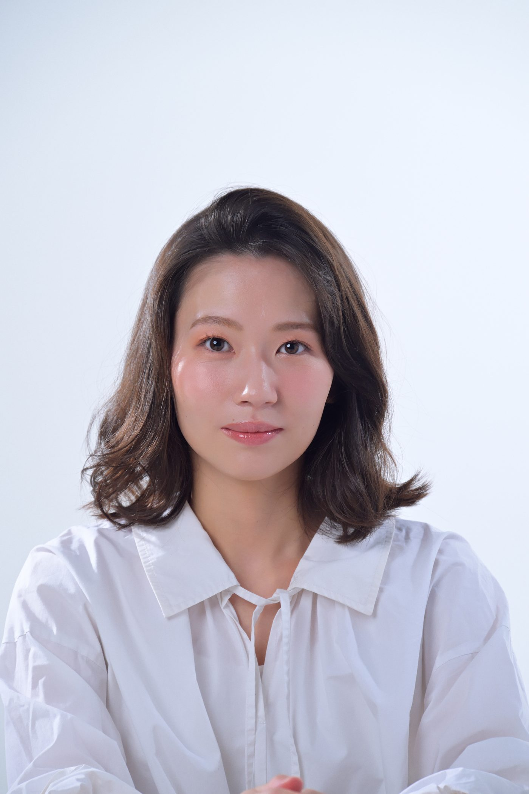
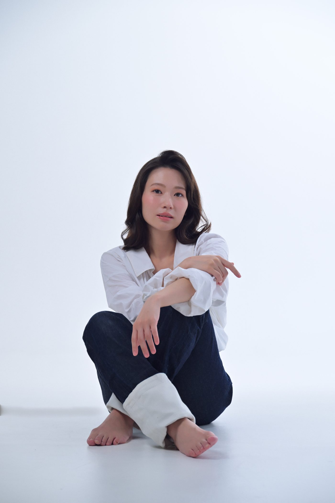
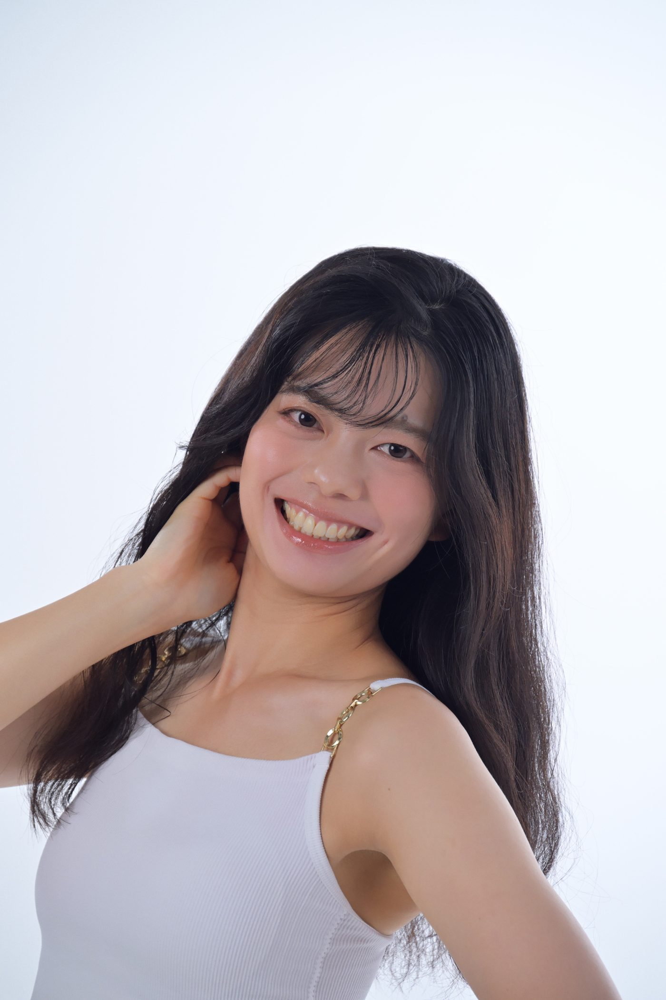
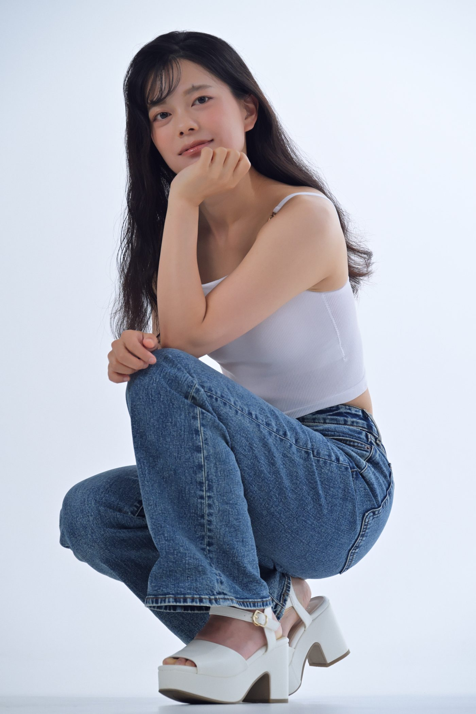
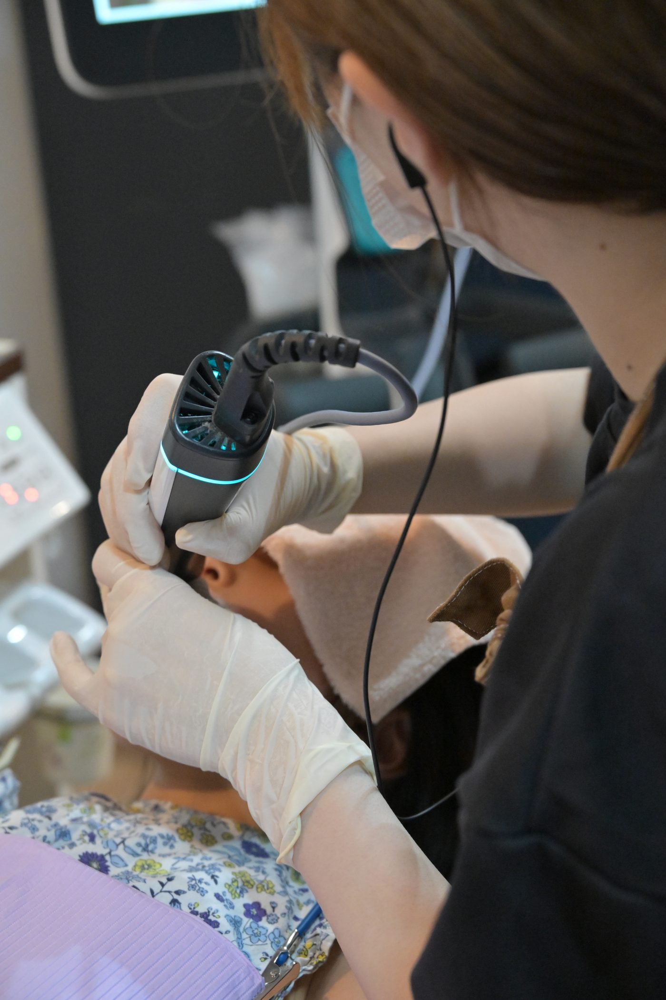
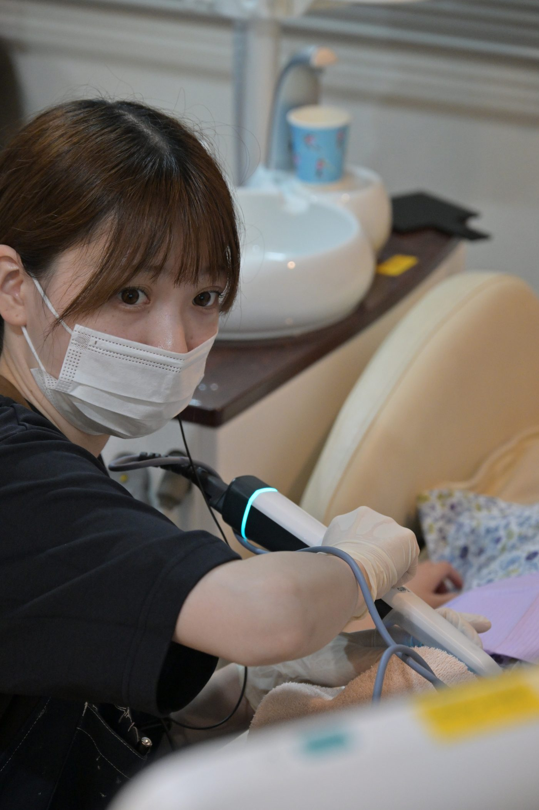
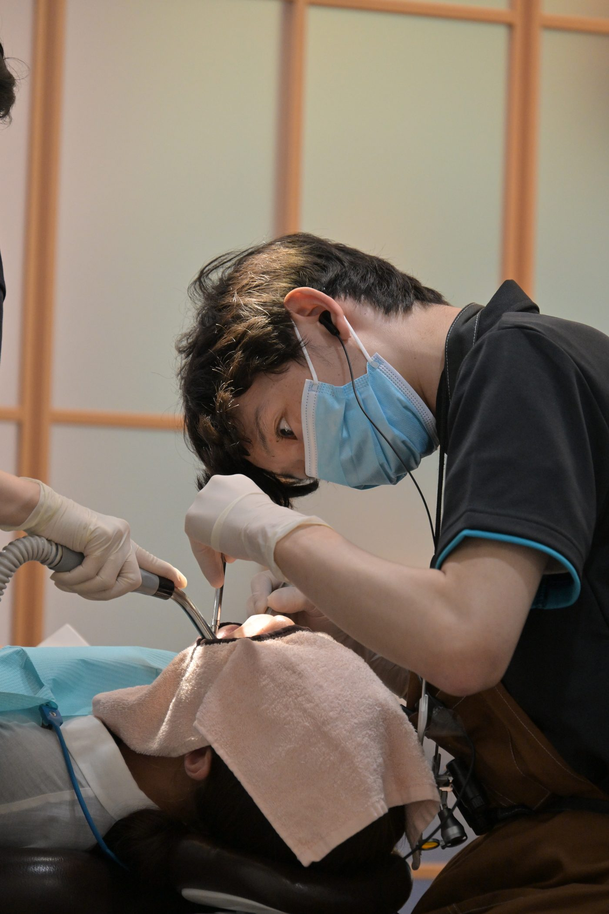
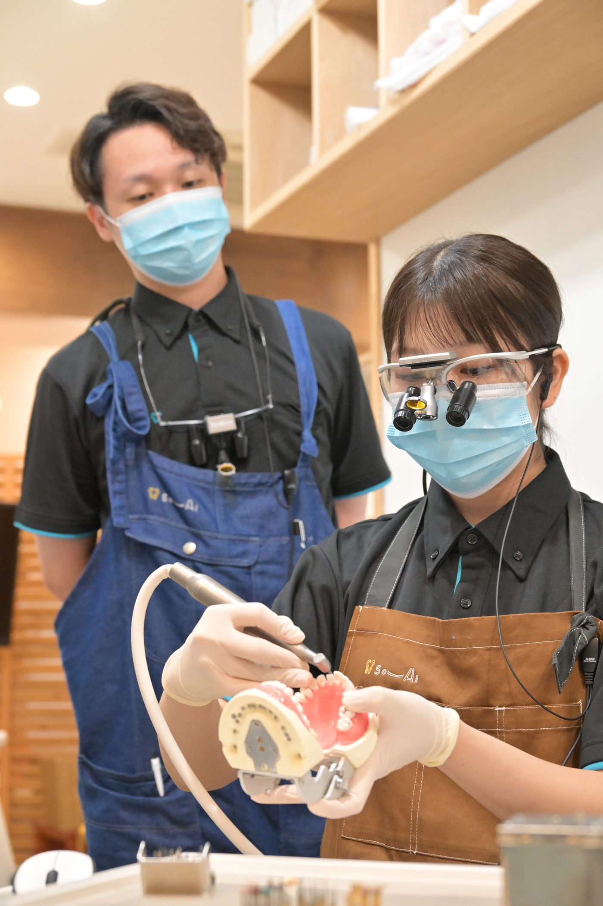

Works
スタジオポートレート撮影実績
白ホリゾントスタジオでのポートレート撮影より。ライティング・表情のディレクションを含め、対話をしながら一人ひとりの魅力を引き出す撮影スタイルの参考例としてご覧ください。




Client Work
クライアント撮影実績
ある医院様よりご依頼いただいた、スタッフの皆様の働く姿の撮影実績です。現場の空気感を損なわないよう、対話をしながら自然な表情・所作を捉えることを大切にしています。



